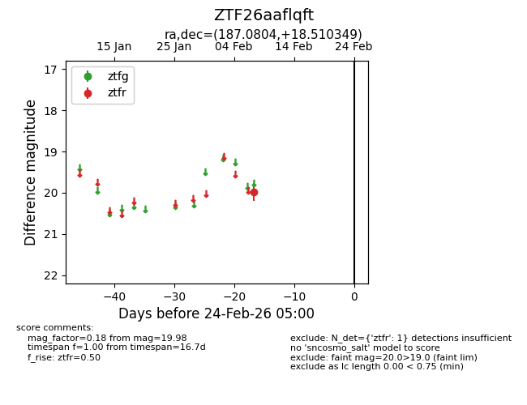
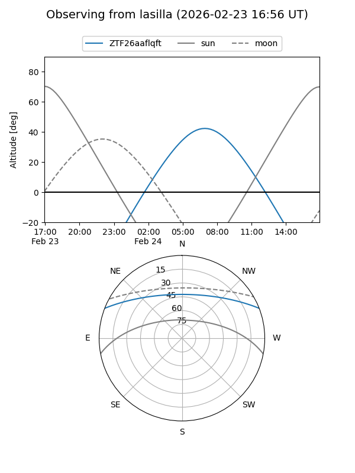
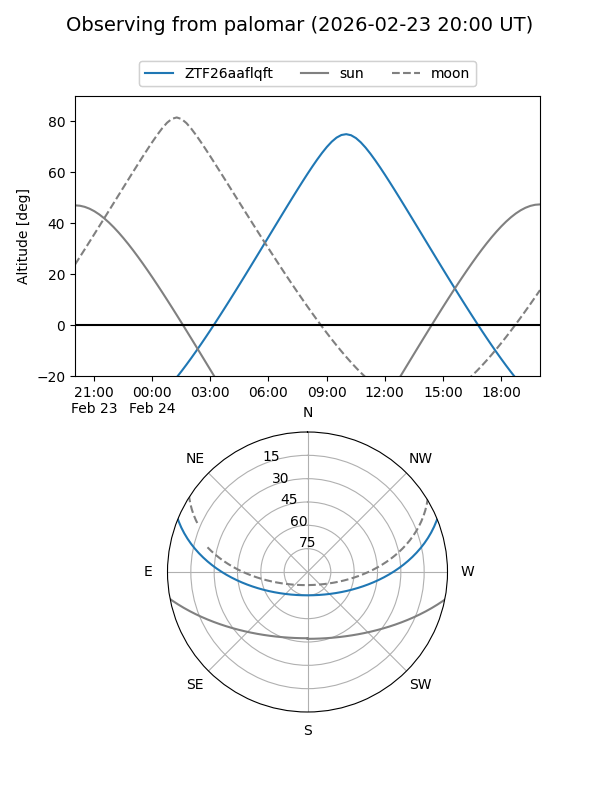

ZTF26aaflqft
Target ZTF26aaflqft at 2026-02-24 09:08
Aliases and brokers:
FINK: link
Lasair: link
ALeRCE: link
alt names
ZTF26aaflqft (ztf,fink_ztf)
Coordinates:
equatorial (ra, dec) = 187.0804,+18.51035
equatorial (HMS+DMS) = 12:28:19.29,+18:30:37.26
galactic (l, b) = (270.0409,+79.87295)
Flags:
Photometry:
last ztfr=19.98
1 ztfr detections
Lightcurve

Visibility


Additional plots